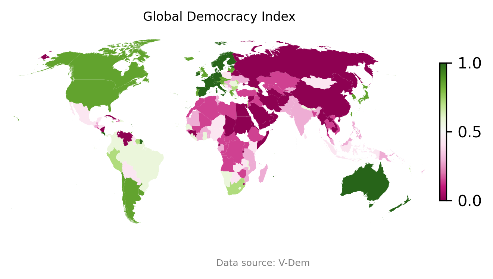
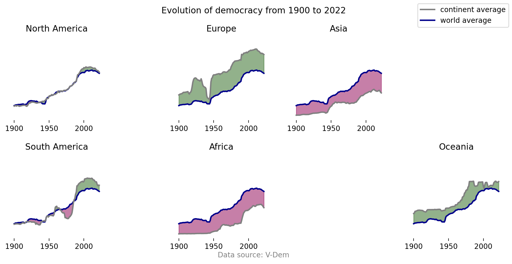
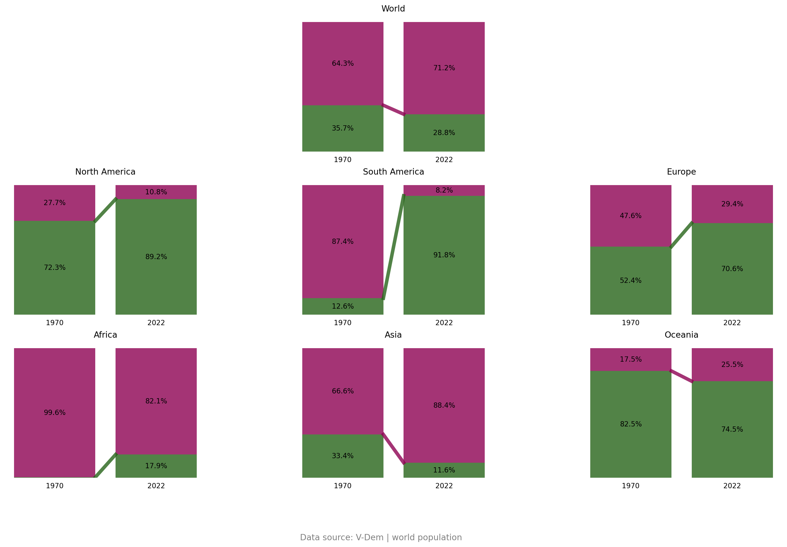
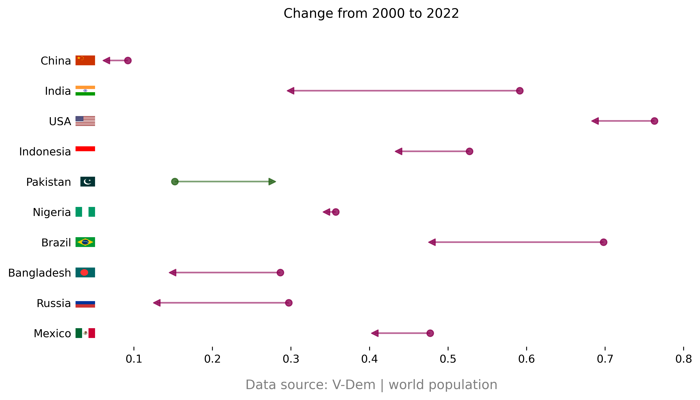
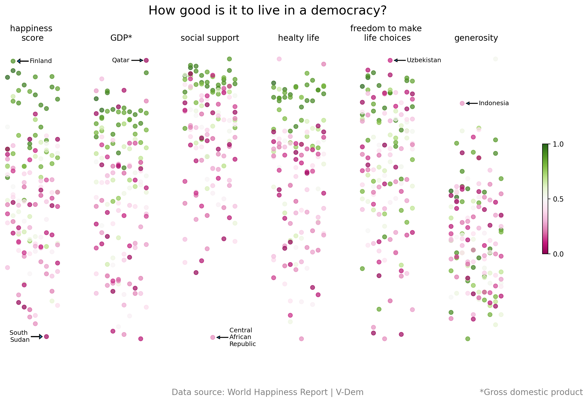

It all began in ancient Greece. An idea was born that would change the fate of nations. People gathered in ancient Athena, exchanged their opinions and made joint decisions. Democracy was born in this place. But what about this idea today? How has democracy developed in recent years?
In the Western world, the concept of democracy is often taken for granted, with the ability to vote and influence the direction of one's country considered a normal part of our life. However, when we shift our focus beyond Western borders, the landscape of democracy appears significantly varied. Democracy is a complex subject. It is easy get overwhelmed with all the data and different indices. The goal of the following article is to give you an understanding, how democratic sitiuation is nowdays and how it developed over the past years. Let's explore the current global democratic landscape, where a value of 0 signifies a non-democratic country and 1 represents a perfect democracy.

Democracy is not just a state that is binary and could be switched on and off, instead it is a dynamic and ongoing process that is constantly envolving both positively and negatively. The graph below offers a visual representation of the democratic progress across individual continents. Each country is equaly weighted. The average of the country is then compared with the continent average.

Over the last 100 years we could see a positive trend on all continents. But what happens if we reduce the time period and dont look at each country but at the number of people that live on each continent. Below you can see the number of people living in a democracy and those living in an autocracy. It compares the numbers in 1970 and in 2020.

The latest chart suggests a growing trend towards autocracy, we can see that today more than 70% of all people are living in non democratic countries. If we just look at the changes over the last 20 years the picture is not brighter. If we look at the 10 most populated countries the only country with a positive trend is Pakistan.

The rise of autocractic regimes is undeniable. The democratic rights for many people are getting more and more limited. However this rises the question if this is necessarily a negative development? Of course we as western are quite biased and probably everyone would answer this question with yes. But lets look on it with some data. The world happiness measures how happy the people in their respectitive countries are. Now by examing the performace of the democratic and non-democratic countries we can gain insights into the correlation between happiness and their governance.

We see that on most of the plots the democratic countries tend to be on top and the non-democratic on the bottom. The generosity plot is an exception. This can be explained by cultural differents in the countries. The democratic countries tend to be the most capitalistic ones. But if you look at all other charts the message is clear. People in democratic countries tend to be happier.
We saw the decrease of democracy in the last years. We also saw how important it is to live in a democracy. As normal people here in Switzerland we can not do too much about the form of goverance in other countries, but atleast we should take our own democracy serious and go vote and participate actively in it.